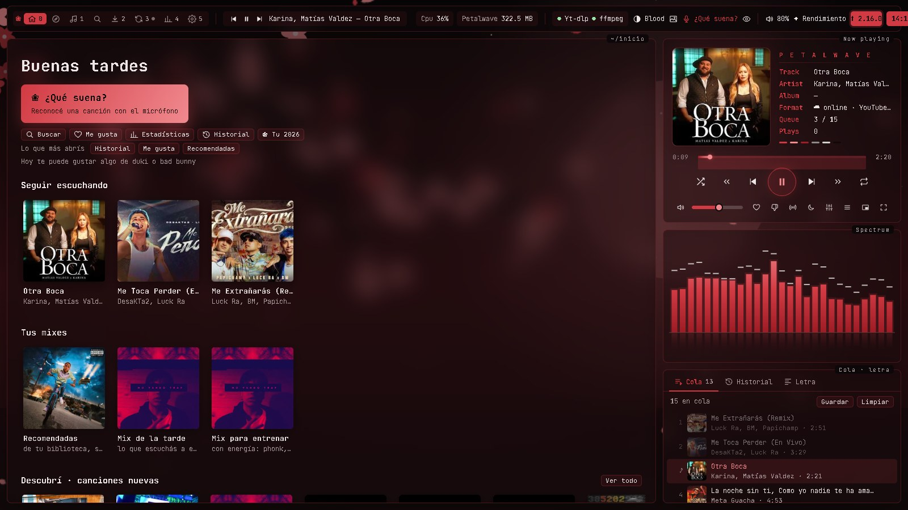
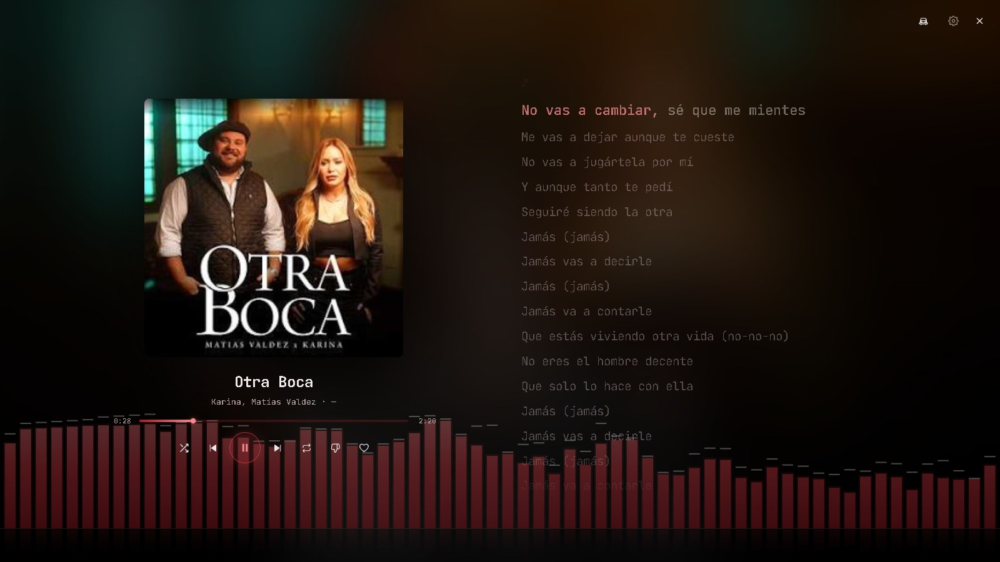

Todo lo que tiene
Funciona aunque no tengas música descargada ni ninguna cuenta.

🧭 Explorar
Música para escuchar ya
Lo más escuchado de tu país, artistas populares y playlists por ánimo y género. Tocás y suena.
- Rankings de cada país
- Ánimos: entrenar, fiesta, relax, concentrarse…
- Ordenado según lo que te gusta

❀ Aprende tus gustos
Recomendaciones que te conocen
Petalwave aprende de lo que escuchás entero, lo que saltás, tus ♥ y tus 👎. Desde el primer día, si le contás qué te gusta.
- Mixes por momento del día y por ánimo
- "Descubrí": canciones nuevas parecidas a tus favoritas
- El look de la app sigue a tu música

🎙️ ¿Qué suena?
Reconocé la canción que suena
Tocás el botón, escucha 10 segundos y te dice qué canción es. Sin clave ni cuenta. La grabación no sale de tu equipo: solo se manda una huella del audio.

✺ Fondos y efectos
Fondos que laten con la música
17 fondos (8 animados) que se pintan con los colores de tu tema. Con los efectos activados, el fondo tiembla y late con cada golpe de la canción. Se apagan con un toque.

♪ Pantalla completa
Letras sincronizadas y visualizador
Letra al ritmo de la canción, visualizador que lee el audio real y modo karaoke.
🎚️Ecualizador de 10 bandasCon presets (bass boost, phonk, voces, noche…) y volumen parejo entre canciones.
🕘HistorialTodo lo que escuchaste, por día, con cuánto escuchaste de cada canción.
⇣DescargasBajá canciones y playlists en mp3, m4a, opus o mp4 para escuchar sin internet.
🎨A tu gustoTemas, tipografías, diseño de ventanas, fondos propios (imagen, GIF o video).
📱Windows y AndroidMismo diseño en la PC y en el celular, con controles en la notificación y Android Auto.
🔒PrivadaSin publicidad, sin cuenta y sin rastreo. Tus gustos se calculan en tu equipo.